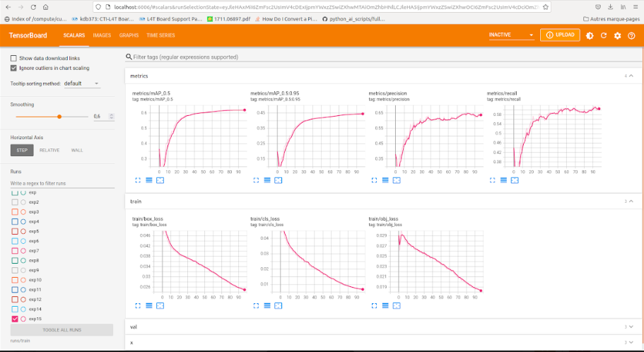

Ce projet a été réalisé dans le cadre du projet de deuxième année du département informatique au sein de l'école des Mines de Nancy.
C'est le fruit d'un travail qui a été encadré par Monsieur Briot Loick et réalisé par CHANA Housna et GALMICHE Nathan.
(2021-2022)
code source
La labellisation (ou annotation) est un travail que doit réaliser de plus en plus d'entreprises,
cette étape étant primordiale à l'utilisation d'apprentissage automatique supervisée.
Les données publiques des grandes banques de données n'étant pas toujours adaptées ou existantes,
il est nécessaire de pouvoir se créer ses propre jeux de données.
Dans le cadre du projet SCAR, cette thématique est très présente notamment pour entraîner des modèles d'IA
permettant de reconnaître des objets, effectuer de la squeletisation... etc
L’idée est d’essayer de développer une nouvelle fonctionnalité,
pour rendre un entrainement du modèle plus efficace .Ici, on s'intéressera à
l’export de données dans différents formats
Nous avons remarqué qu'il existe bien evidement un gand nombre de datasets contenant un volume important de contenu. Nous avons choisi de s'intéresser à quelques unes.
Déja, c'est quoi annoter des données ?
Il est vrai qu'un ordinateur est capable de faire des calculs complexes dans un laps de temps très court. Pourtant, cette même machine serait incapable de distinguer entre un chien et un chat sur une photo. Cette tâche peut sembler facile pour nous, car cette capacité est presque innée pour un humain. Pour y arriver, il faut faire appel à des algorithmes d'entrainement à partir d’un ensemble de données. Et ce sont ces données qui doivent être étiquetées afin de présenter la "cible" que l’on souhaite que le modèle de Machine Learning apprenne à prédire.
Il existe de nombreux types d’annotations, en fonction des tâches que nous souhaitons effectuer. Parmi les exemples, on peut citer les polygones, les points de repère, la 2D, la 3D, la boîte de délimitation, le masquage, le suivi, la polyligne, etc
Nous avons choisi de s'interesser aux Bounding boxes (boites englobantes) puisque notre projet repose en gros sur cette technique d'annotation.
En effet, ce type d’annotation aide à faire des prédictions dans la vie réelle et à reconnaître les objets avec précision.
Remarque :
Deux conventions principales sont suivies lors de la représentation des boîtes englobantes :

OpenCV, est OpenCV est une bibliothèque graphique libre, spécialisée dans le traitement d'images en temps réel.
Elle permet d’effectuer des traitements sur des images à savoir l'extraction de couleurs, la détection de visages, de formes, application de filtres,...
Ces algorithmes se basent principalement sur des calculs mathématiques complexes, concernant surtout les traitements sur les matrices
(car une image peut être considérée comme une matrice de pixels).
Pour rappel, l'objectif est de créer une base de données qu'on pourra l'utiliser quelque soit le format d'annotation.
Avant de remplir notre base, il fallait alors penser à une architecture qui va nous permettre à réaliser notre objectif.
L'idée était alors de concevoir une base de donnée sous SQlite ayant 3 tables :

la classe dont appartient l'objet x_centre du bounding boxe de l'objet y_centre du bounding boxe de l'objet largeur hauteur
YOLO, acronyme de 'You only look once', est un algorithme de détection d'objet qui divise les images en un système de grille. Chaque cellule de la grille est responsable de la détection des objets en elle-même. YOLOv5 représente la version la plus récente de l'algorithme YOLO, et c'est en se servant de lui que nous allons entrainer notre propre dataset.
Après avoir créer et remplir notre base de données , on peut commencer alors l'entrainement !
On commence par cloner le YOLOV5 repository sur github :

Dans notre cas, notre modèle arrivait à reconnaitre quelques classes , par exemple les personnes et les écrans (Tv) ,cependant il se trompait plusieurs fois .
En se servant de Tensorboard, qui est une plateforme qui fournit les solutions de visualisation et les outils nécessaires aux tests de machine learning ; on trouve les représentations des metrics suivantes :
En géneral, en faisant du machine learning, il est intéressant de comprendre l'interprétation des résultats qu'on trouve par la suite. Pour ceci, il faut tout d'abord comprendre certains termes lié au Machine Learning.
La précision:
mesure l'exactitude de vos prédictions, c'est-à-dire le pourcentage de vos prédictions qui sont correctes.
Plus la precision est haute, moins le modèle se trompe sur les positifs.
En d’autres termes c’est le nombre de positifs bien prédit (Vrai Positif) divisé par l’ensemble des positifs prédit (Vrai Positif + Faux Positif).
Le rappel :
permet de mesurer le pourcentage de positifs bien prédit par notre modèle.
Plus il est élevé, plus le modèle de Machine Learning maximise le nombre de Vrai Positif.
Si sa valeur augmente , cela veut plutôt dire qu’il ne ratera aucun positif.
Néanmoins cela ne donne aucune information sur sa qualité de prédiction sur les négatifs.
En d’autres termes c’est le nombre de positifs bien prédit (Vrai Positif) divisé par l’ensemble des positifs (Vrai Positif + Faux Négatif).
F1 score :
Le F1 Score permet d’effectuer une bonne évaluation de la performance de notre modèle.
Si le score est élevé, le plus votre modèle est performant.
Il se calcule en fonction de la précision et du recall.
Les pertes :
On a trois types de perte : perte de boîte, perte d'objet et perte de classification.
La perte de boîte représente la capacité de l'algorithme à localiser le centre d'un objet et la capacité de la boîte limite prédite à couvrir un objet.
L'objectivité est essentiellement une mesure de la probabilité qu'un objet existe dans une région d'intérêt proposée. Si l'objectivité est élevée, cela signifie que la fenêtre d'image est susceptible de contenir un objet.
La perte de classification donne une idée de la capacité de l'algorithme à prédire la classe correcte d'un objet donné.
Le modèle s'est rapidement amélioré en termes de précision, de rappel et de précision moyenne .
La boîte, l'objectalité et les pertes de classification des données de validation ont également montré une baisse rapide.
La mAP :
La mAP pour la détection d'objets est la moyenne de la AP calculée pour toutes les classes.
Ce projet s’est révélé très enrichissant et formative.
Il nous a permis d’appliquer nos connaissances en apprentissage automatique, en développement (python) et en bases de données (SQLite).
Les principaux problèmes, que nous avons rencontrés, concernaient surtout le temps d'entrainer un modèle, de vérifier les données de notre base et d'interpréter les résultats.
Toutefois, il serait intéressant de continuer le travail sur ce projet et développer d'autres fonctionnalités à part celle de l'export.